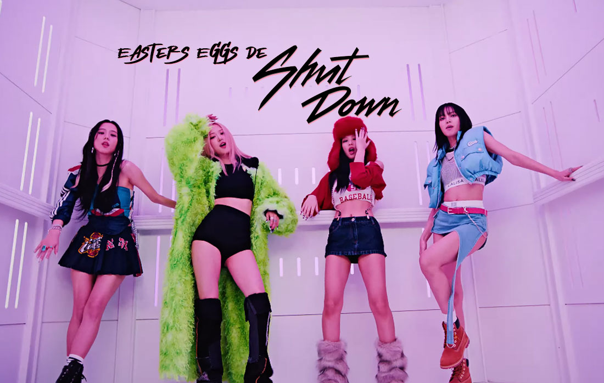

BLACKPINK NEWS!
BLACKPINK becomes first K-pop girl group to top Britain's albums chart
BLACKPINK has topped the albums section of Britain's Official Chart with its latest work, 'Born Pink'. It has thus become the first K-pop girl group to claim the belt on the most celebrated music chart in Britain, its agency said, reports Yonhap. The girl group's second full-length album, which was released on September 16, beat albums by Suede, Rina Sawayama and other global pop stars on the Official Albums Chart on Friday (BST), YG Entertainment said.
BLACKPINK's "SHUT DOWN" is the second fastest song of 2022 by a Kpop group to surpass 200 million streams on Spotify after "PINK VENOM"
BLACKPINK continues to prove their undeniable impact as a group with the overwhelming success of their songs on various music charts globally. On this occasion, their hit "SHUT DOWN" once again stands out in the news after it reached a new milestone on Spotify. In particular, BLACKPINK's "Shut Down" just surpassed 200 million streams on Spotify, making it the group's 16th song to do so.
Selena Gomez meets up with BLACKPINK backstage during 'BORN PINK' Newark tour stop
On November 27, the pop singer took to her official Twitter account to share photos of her backstage with BLACKPINK at one of the Newark dates of their North American tour, captioning the photo set with: "Selpink chillin." In the images, Selena, Jisoo, Rosé, Jennie, and Lisa can be seen showing their close bond with arms around each other as they pose for the camera.
BLACKPINK Jennie's first reaction to seeing the spectacular Porsche car that she designed herself is making headlines in Korean media
BLACKPINK's Kim Jennie recently released a vlog that shows her reaction to her self-designed Porsche “Dream Car.” On November 24th, a video titled “Jennie X Sonderwunsch vlog” was posted on Jennie‘s YouTube channel “Jennierubyjane Official. Jennie’s self-designed vehicle was full of her touch everywhere. There are engravings of “JennieRubyjane” and “NINI"
BLACKPINK becomes the first K-pop artist to have two music videos surpass 1.7 BILLION views on YouTube
BLACKPINK continues to break new records thanks to their hit songs, this time they scored an impressive milestone on YouTube. On November 25, YG Entertainment reported through their official accounts that BLACKPINK's hit music video "Kill This Love" surpassed 1.7 billion views on YouTube. “Kill This Love” joins BLACKPINK's “DDU-DU DDU-DU” and Psy's “Gangnam Style” as the only songs by K-pop artists in YouTube history to surpass 1.7 Billion views on YouTube.
"LALISA" by BLACKPINK's LISA breaks a 7-year world record held by Adele
LISA's "LALISA" premiered on September 9, 2021, and is a song that has gone around the world, currently being considered by various international media as the most successful solo debut in the history of Kpop for its great performance on all charts. musicals, multiple records, and international awards obtained. Now LISA's "LALISA" reached the first position on the Kyrgyzstan iTunes chart. With this achievement, the song has ranked number 1 in 103 different countries on iTunes, setting a new record. In particular, LISA's "LALISA" broke the world record that had been set by Adele 7 years ago with her two songs, "Easy on Me" and "Hello," both of which topped the iTunes charts in 102 different countries.